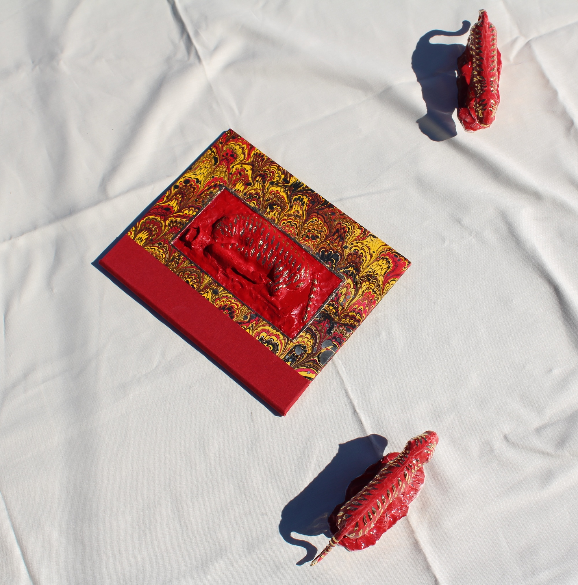
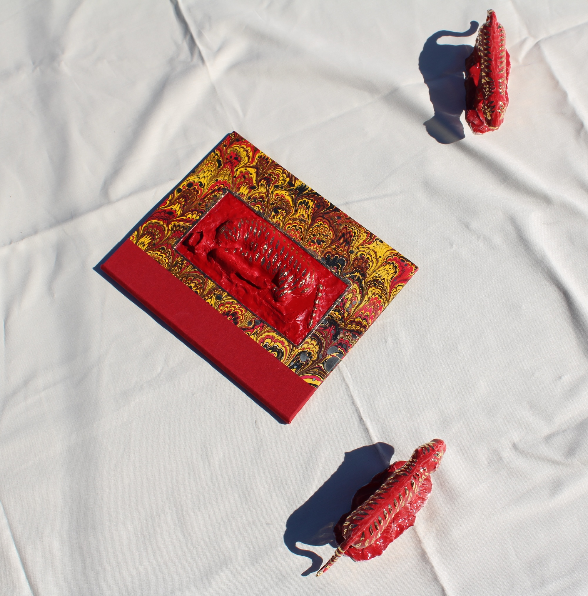

IN THE BELLY OF THE BEAST
In The Belly of the Beast is a multifaceted artwork that includes an interactive website, two artist books, and porcelain bookends. The work is inspired by Tipu's Tiger, a famous automaton depicting a tiger mauling a British soldier, which was seized from Tipu Sultan in 1799 and now resides at the V&A Museum in London. A central feature of the website is a 3D scan of Tipu's Tiger, captured using my cell phone. When visitors explore the interior of the tiger's belly, they encounter videos, including footage of the Robert Clive statue in London and the Clive Museum at Powis Castle, Wales, among others. While inside the "belly of the beast," viewers are invited to symbolically "feed the tiger."
Robert Clive, a key figure in establishing the British East India Company's rule in India, is associated with the Bengal famine, during which nearly 3 million people died of starvation. The Clive collection at Powis Castle contains many of Tipu Sultan’s personal belongings.
One of the accompanying artist books is an accordion-fold design, modeled after Tipu's Tiger but reimagined in an upright position. When opened, the book splits the tiger's belly, revealing the figure of Robert Clive. The porcelain bookends were cast from 3D-printed molds of the repositioned tiger scan. The larger book delves into themes such as tiger hunting in colonial India, the tiger as a symbol of resistance and strength, and the broader meaning of being "in the belly of the beast."
Research for this project was conducted during a residency with the Vasari Research Centre for Art and Technology and supported by a grant from the Experimental Humanities Collaborative Network.
Thank you to Michelle Wen for use of her kiln and studio to create my porcelain tigers and thank you to my teachers, Hadley Hill, Sheryl Oppenheim, María Verónica San Martín, Sarah Nicholls, Elizabeth Castaldo & Roni Gross at The Center For Book Arts for giving me the skills to create my artists books.


 



← back to selected work